Computational Structural Design II - Geometry, Data and Visualization
Learning Goal:
- Introduction to computational geometry in COMPAS
- Data, Geometry and Class in COMPAS
- visualization
Content:
A. Geometry Data
A1. Describe a point in CAD
A point in a 3D Cartesian coordinate system can be represented by 3 numbers. Describing the values along x, y and z axes. For example, in Rhino and Grasshopper, a point can be created numerically by inputing 3 values in a "Create Point" container.
</br> 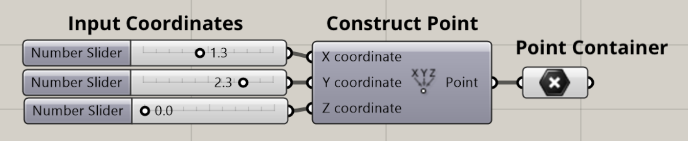
We will do the same, utilizing our Jupyter Notebook interface.
A2. Describe a Point by Python list
Similarly a list [x, y, z] can describe a point in Python. The three numbers represent the xyz coordinates of the point. Since a point is described as a list, the value in the list can be retrieved, modified, and updated by accessing the corresponding index of the list.
Here we create a point x=0, y=1, z=1 and change the coordinate y=5.
# xyz coordinates of the point
my_point = [0, 5, 2]
print("y coordinate of my_point is", my_point[1])
# re-assign the y coordinates 5
my_point[1] = 5
print("xyz coordinates of my_point are", my_point)
y coordinate of my_point is 5
xyz coordinates of my_point are [0, 5, 2]
A3. Geometry Data Summary
Besides point, basic geometry types - such as vector, line, plane - can be described numerically in Python by lists of values. The length of the list corresponds to the number of dimensions of the space the geometry resides in. In 3D space, the list contains 3 elements. The following table illustrates the data used to describe 3D geometries numerically.
| Geometry | Data | Description |
|---|---|---|
| point | [x, y, z] | |
| vector | [x, y, z] | |
| line | ([x1, y1, z1], [x2, y2, z2]) | (start point, end point) |
| plane | ([x0, y0, z0], [xn, yn, zn]) | (origin, normal) |
| circle | [([x0, y0, z0], [xn, yn, zn]), r] | [(origin, normal), radius] |
| polyline | ([x1, y1, z1], [x2, y2, z2], [x3, y3, z3, ...]) | collection of points |
| polygon | ([x1, y1, z1], [x2, y2, z2], [x3, y3, z3, ...]) | collection of points |
| frame | ([x0, y0, z0], [x1, y1, z1], [x2, y2, z2]) | [origin, vector, vector] |
</br>
B. Geometry Class
A geometry type can be described by data. We can use a Class as a constructor, a template, or a "blueprint" to create Objects of a certain geometry type. An Object is an instance of a Class and it shares all attributes and the behavior of the Class. Classes are used frequently in Python scripting. A class can not only store data, but also define methods (an object-oriented programming term for functions) alongside the data that they operate on and produce.
In the following session, we will learn Python Class by creating our own Point class. Then we will use the class to create a Point object, which represents the point x=0, y=1, z=1.
B1. Point Class
B1_a. Create a Class
Class definition cannot be empty. Put the pass statement to avoid getting an error.
class Point:
""" Point class"""
pass
pt = Point() # instantiate an object of Point
print(pt) # by default, print the name of the object’s class and the address of the object.
<__main__.Point object at 0x7fb6c808a0a0>
B1b. `_init()` function
All classes have a function called __init__(), which is always executed when the class is being initiated. We can pass some initial values to the class by calling the __init__() function. Before the parameters x, y, z, there is a self, which refers to the object itself. Then, we need to create new fields also called x, y, z. Notice self.x and x are two different variables even though they are both called x. You can view the dotted notation self.x as the attribute of your Point object, and the other x is a local variable.
class Point:
""" Point class"""
def __init__(self, x, y, z):
self.x = x
self.y = y
self.z = z
pt = Point(1, 1, 0) # create a point object
print("xyz coordinates are:", pt.x, pt.y, pt.z)
xyz coordinates are: 1 1 0
B1_c. Object Method
Now let's add a method to Point class to translate the point. What we want is to move or "translate" the point. The method modifies the object attribute self.x, self.y, self.z by adding the translation distance along the corresponding axis.
class Point:
""" Point class"""
def __init__(self, x, y, z):
self.x = x
self.y = y
self.z = z
def translate(self, vec_x, vec_y, vec_z):
"""Translate this point along a 3d vector"""
self.x += vec_x
self.y += vec_y
self.z += vec_z
pt = Point(1, 1, 0) # create a point object
print("xyz coordinates before translation are:", pt.x, pt.y, pt.z)
pt.translate(1,3,1)
print("xyz coordinates after translation are:", pt.x, pt.y, pt.z)
xyz coordinates before translation are: 1 1 0
xyz coordinates after translation are: 2 4 1
B1_d. Modify Object Properties
Properties on objects can be modified.
pt.x = 3
print("xyz coordinates after modification are:", pt.x, pt.y, pt.z)
xyz coordinates after modification are: 3 4 1
B2. Use the Point Class from COMPAS
COMPAS contains a Point class which is similar to the one we have created. However, it contains more object methods which have already been developed. In a COMPAS Point class, a Point has three parameters, x, y, z. They could be accessed through indexing as well as through .x, .y, and .z attributes.

from compas.geometry import Point
my_point = Point(0, 1, 1) # create a point object
print(my_point.y) # attribute y of point
print(my_point[1] == my_point.y)
my_point.y = 5 # reassign the attribute y
print(my_point) # Point class contains a class function that prints the summary of the object
1.0
True
Point(0.000, 5.000, 1.000)
B3. Geometry Classes in COMPAS
COMPAS provides a number of ready-to-use primitive objects. Available primitive objects include Point, Vector, Line, Plane, Polyline, Polygon, Circle, Frame, etc. All COMPAS primitives can be used interchangeably with native Python objects as input for geometry functions and object methods.
For a complete overview, you can visit the API Reference.
| Geometry Object | COMPAS Class |
|---|---|
| point | point = Point(x, y, z) |
| vector | vector = Vector(x, y, z) |
| line | line = Line(point, point) |
| plane | plane = Plane(point, vector) |
| circle | circle = Circle(plane, radius) |
| polyline | polyline = Polyline(points) |
| polygon | polygon = Polygon(points) |
| frame | frame = Frame(point, vector, vector) |
from compas.geometry import Point, Line
line_1 = Line([0, 0, 0], [2, 0, 0])
line_2 = Line(Point(0, 0, 0), Point(2, 0, 0))
print(line_1 == line_2)
True
C. Geometry and Visualization
C1. Visualize a Point
The point we have created in the last session is a virtual object, now we will visualize it
from compas.geometry import Point
from compas_plotters import Plotter
my_point = Point(1, 1, 0)
# visualize the Point
plotter = Plotter(show_axes=True)
plotter.add(my_point)
plotter.show()
</br> 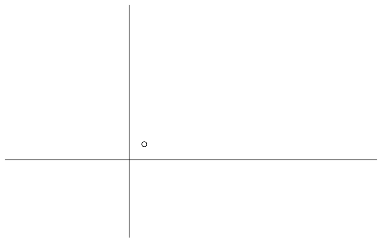
from compas.geometry import Point
from compas_plotters import Plotter
from compas_plotters.artists import PointArtist
my_point = Point(1, 1, 0)
pointartist = PointArtist(my_point)
# visualize the Point
plotter = Plotter(show_axes=True)
plotter.add(my_point, pointartist)
plotter.show()
---------------------------------------------------------------------------
DataArtistNotRegistered Traceback (most recent call last)
Input In [20], in <module>
3 from compas_plotters.artists import PointArtist
5 my_point = Point(1, 1, 0)
----> 6 pointartist = PointArtist(my_point)
8 # visualize the Point
9 plotter = Plotter(show_axes=True)
File ~/opt/anaconda3/envs/brg/lib/python3.8/site-packages/compas/artists/artist.py:88, in Artist.__new__(cls, *args, **kwargs)
86 register_artists()
87 Artist.__ARTISTS_REGISTERED = True
---> 88 cls = _get_artist_cls(args[0], **kwargs)
89 PluginValidator.ensure_implementations(cls)
90 return super(Artist, cls).__new__(cls)
File ~/opt/anaconda3/envs/brg/lib/python3.8/site-packages/compas/artists/artist.py:59, in _get_artist_cls(data, **kwargs)
56 break
58 if cls is None:
---> 59 raise DataArtistNotRegistered('No artist is registered for this data type: {} in this context: {}'.format(dtype, Artist.CONTEXT))
61 return cls
DataArtistNotRegistered: No artist is registered for this data type: <class 'compas.geometry.primitives.point.Point'> in this context: None
After we generate the geometry objects, we can use a visualization interface to translate the information into a visual context. Firstly, We need a "drawing surface" - a canvas in 2D, or a scene in 3D. A 2D canvas can contain a number of shapes, which contains not only the geometric data - such as the coordinates, but also graphics context. Graphics context means objects that provide mechanisms for displaying the geometry, such as color, width of the curve.
TODO: add diagram about data, artist, plotter...
# from IPython.display import display
# fig = plotter.figure
# display(fig)
C2. Line
from compas.geometry import Line
from compas_plotters import Plotter
# create a line
my_line = Line([0, 0, 0], [1, 1, 0])
# visualize the line
plotter = Plotter(show_axes=True)
plotter.add(my_line, draw_points=False, draw_as_segment=True)
plotter.zoom_extents()
plotter.show()
</br> 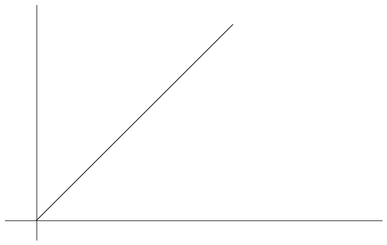
C3. Vector
A vector is a geometric object that has magnitude and direction. In Python, it could be represented through a list of XYZ components.
C3_a. Vector Data
my_vector = [1, 2, 0] # xyz coordinates of the vector
A vector can be added, subtracted, multiplied by another vector. For example, here's the example to add two vectors in Python.
vector1 = [1, 2, 0]
vector2 = [0, 1, 0]
vector3 = [vector1[i] + vector2[i] for i in range(3)]
print(vector3)
[1, 3, 0]
C3_b. Geometric Operation Functions
compas.geometry provides geometric operation functions to simplify the use of basic Python operations. These functions always return native Python objects. The last example can be realized by using compas.geometry.add_vectors.
TODO: add cross product
from compas.geometry import add_vectors
vector1 = [1, 2, 0]
vector2 = [0, 1, 0]
vector3 = add_vectors(vector1, vector2)
print(vector3)
[1, 3, 0]
C3_c. Vector Class
The COMPAS Vector class contains useful geometric properties and methods. Now let's create a Vector object and check its length. In Vector class, length is the attribute of the object.
from compas.geometry import Vector
my_vector = Vector(1, 2, 0)
print(my_vector)
print(my_vector.length)
Vector(1.000, 2.000, 0.000)
2.23606797749979
A vector could also be constructed from start and end points. COMPAS geometry types could be used interchangeably with native Python types. Both a COMPAS Point object or a list composed of 3 components could be used as input.
from compas.geometry import Point, Vector
my_vector = Vector.from_start_end(Point(0, 0, 0), Point(1, 2, 0))
# my_vector = Vector.from_start_end([0, 0, 0], [1, 2, 0]
print(my_vector)
print(my_vector == Vector(1, 2, 0))
Vector(1.000, 2.000, 0.000)
True
Operators such as + or involving COMPAS geometry objects always return a new COMPAS geometry object. For example, scaling my_vector by 2 can use the class method Vector.scale(n) as well as 2.
from compas.geometry import Vector
my_vector = Vector(1, 2, 0)
my_vector.scale(2)
print(my_vector)
print(my_vector == Vector(2, 4, 0))
print(my_vector == Vector(1, 2, 0) * 2)
Vector(2.000, 4.000, 0.000)
True
True
C3_d: Exercise: Draw Vectors
Question: Given three points: pointA: [0, 0, 0], pointB: [0, 1, 0], pointC: [3, 2, 0]. You need to draw three vectors as shown in the following picture.
</br> 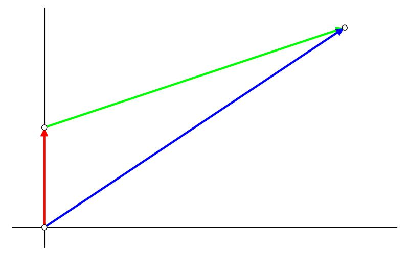
from compas.geometry import Point
from compas_plotters import Plotter
# Point Geometry
point1 = Point(0, 0, 0)
point2 = Point(0, 1, 0)
point3 = Point(3, 2, 0)
# Plotter
plotter = Plotter(show_axes=True)
plotter.add(point1)
plotter.add(point2)
plotter.add(point3)
plotter.zoom_extents()
plotter.show()
</br> 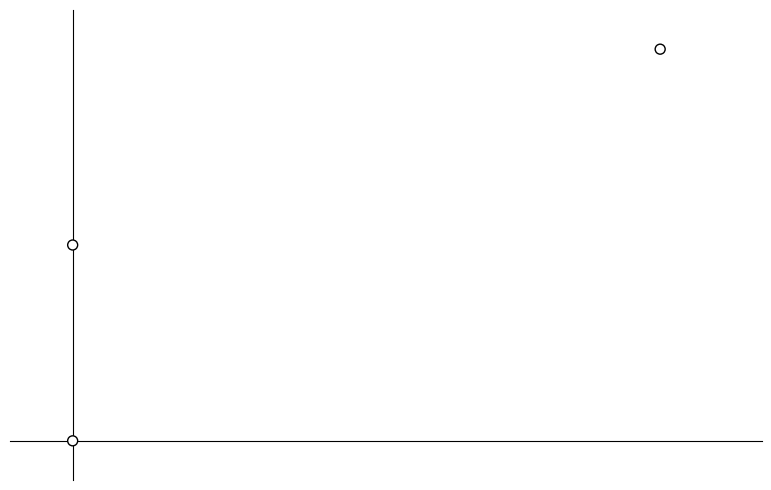 </br>
from compas.geometry import Point
from compas_plotters import Plotter
# Point Geometry
point1 = Point(0, 0, 0)
point2 = Point(0, 1, 0)
point3 = Point(3, 2, 0)
vector1 = point2 - point1
vector2 = point3 - point2
vector3 = point3 - point1
# Plotter
plotter = Plotter(show_axes=True)
plotter.add(point1)
plotter.add(point2)
plotter.add(point3)
plotter.add(vector1, point=point1, color=(1, 0, 0))
plotter.add(vector2, point=point2, color=(0, 1, 0))
plotter.add(vector3, point=point1, color=(0, 0, 1))
plotter.zoom_extents()
# # save image
# import os
# HERE = os.getcwd()
# path = os.path.join(HERE, 'img/vectors.jpg')
# plotter.save(path) # call save before plotter.show; after plotter.show() is called, a new figure is created.
plotter.show()
</br> 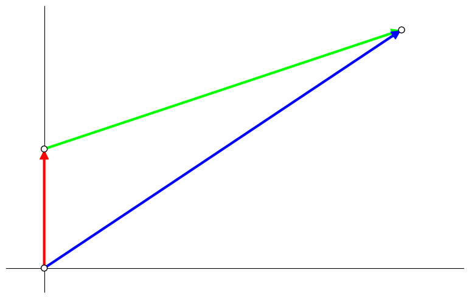 </br>
C4. Polygon
A Polygon represents an ordered collection of points in space connected by straight line segments forming a closed boundary around the interior space. It has a closed boundary that separates its interior from the exterior.
from compas.geometry import Polygon
from compas_plotters import Plotter
my_polygon = Polygon([[0, 0, 0], [1, 1, 0], [2, 1, 0], [1, -1, 0]])
plotter = Plotter(show_axes=True)
plotter.add(my_polygon, edgecolor=(0, 0, 1), facecolor=(1, 1, 0))
plotter.zoom_extents()
plotter.show()
</br> 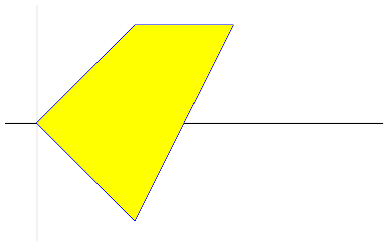 </br>
from compas.geometry import Polygon
from compas_plotters import Plotter
# Construct a regular polygon from a number of sides and a radius.
my_polygon = Polygon.from_sides_and_radius_xy(5, 2.0)
plotter = Plotter(show_axes=True)
plotter.add(my_polygon, edgecolor=(0, 0, 1), facecolor=(0.7, 0.7, 1.0))
plotter.zoom_extents()
plotter.show()
</br> 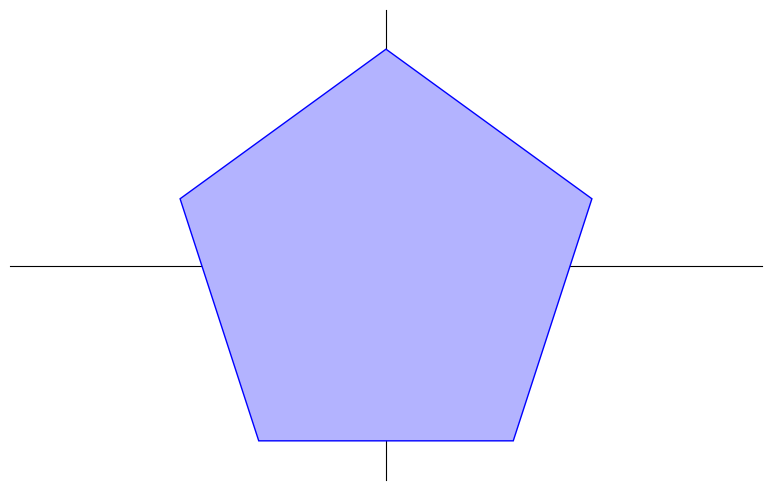 </br>
C5. Polyline
A Polyline is a sequence of points connected by line segments. Different from a Polygon, a Polyline doesn't have an interior and an exterior.
from compas.geometry import Polyline
from compas_plotters import Plotter
my_polyline = Polyline([[0, 0, 0], [1, 1, 0], [2, 1, 0], [1, -1, 0]])
plotter = Plotter(show_axes=True)
plotter.add(my_polyline, color=(1, 0, 0), linewidth=3)
plotter.zoom_extents()
plotter.show()
</br> 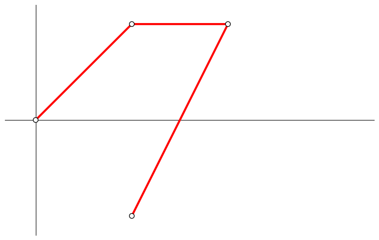 </br>
C6. Circle
from compas.geometry import Plane, Circle
from compas_plotters import Plotter
my_plane = Plane([2, 1, 0], [0, 0, 1]) # center and normal
my_circle = Circle(my_plane, 2)
plotter = Plotter(show_axes=True)
plotter.add(my_circle, edgecolor=(0, 0, 1), facecolor=(0, 1, 1), linewidth=3)
plotter.zoom_extents()
plotter.show()
</br> 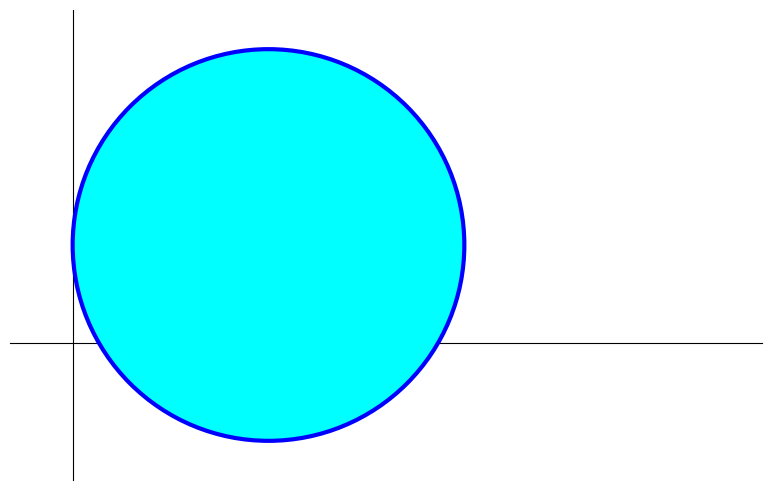 </br>
C7. PointCloud
from random import random
from compas.geometry import Pointcloud
from compas.utilities import i_to_rgb
from compas_plotters import Plotter
# Pointcloud Geometry
pcl = Pointcloud.from_bounds(10, 5, 0, 100)
# Plotter
plotter = Plotter(show_axes=True)
for point in pcl.points:
plotter.add(point, facecolor=i_to_rgb(random(), normalize=True))
plotter.zoom_extents()
plotter.show()
</br> 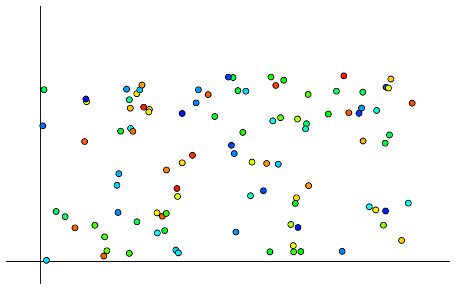 </br>
D. Geometry Operations
D1. Transformation
A Transformation is a change in geometric shape, which is represented by a 4x4 transformation matrix. Here we will learn 3 typical transformations in COMPAS: translation, rotation and scale. A COMPAS geometry object can be transformed by calling the method .transform() or .transformed(). The former modifies the object in place, whereas the latter returns a new object.
D1_a. Translation
Translation is to move the geometry, one of the most basic transformation types. The shape, size and orientation of the geometry remain the same.
from compas.geometry import Translation
T = Translation.from_vector([1, 2, 3])
print(T)
[[ 1.0000, 0.0000, 0.0000, 1.0000],
[ 0.0000, 1.0000, 0.0000, 2.0000],
[ 0.0000, 0.0000, 1.0000, 3.0000],
[ 0.0000, 0.0000, 0.0000, 1.0000]]
from compas.geometry import Polygon, Translation
from compas_plotters import Plotter
# Construct a regular polygon from a number of sides and a radius.
my_polygon = Polygon.from_sides_and_radius_xy(5, 2.0)
my_polygon.transform(T)
plotter = Plotter(show_axes=True)
plotter.add(my_polygon, edgecolor=(0, 0, 1), facecolor=(0.7, 0.7, 1.0))
plotter.zoom_extents()
plotter.show()
</br> 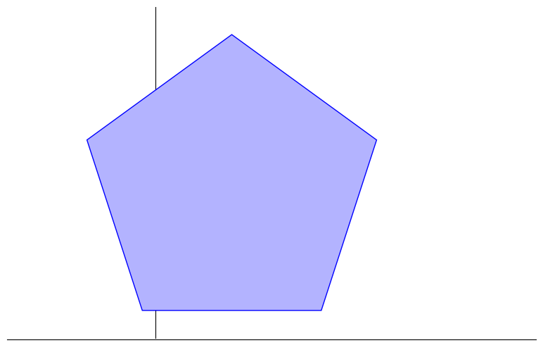 </br>
.transformed() creates a new polygon.
from compas.geometry import Polygon, Translation
from compas_plotters import Plotter
# Construct a regular polygon from a number of sides and a radius.
my_polygon = Polygon.from_sides_and_radius_xy(5, 2.0)
my_polygon.transform(T)
my_polygon = Polygon.from_sides_and_radius_xy(5, 2.0)
T1 = Translation.from_vector([1, 2, 0])
T2 = Translation.from_vector([2, 1, 0])
my_polygon.transform(T1)
my_polygon2 = my_polygon.transformed(T2)
plotter = Plotter(show_axes=True)
plotter.add(my_polygon, edgecolor=(0, 0, 1), facecolor=(0.7, 0.7, 1.0))
plotter.add(my_polygon2, edgecolor=(0, 0, 1), facecolor=(1.0, 0.7, 1.0))
plotter.zoom_extents()
plotter.show()
</br> 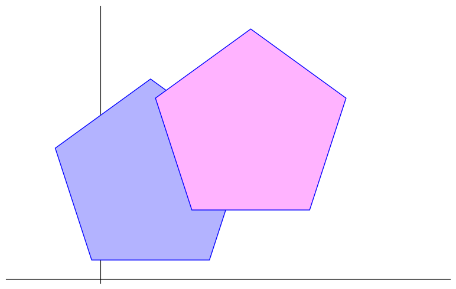 </br>
D1_b. Rotation
Rotation is to rotate the geometry by a certain degree.
import math as m
from compas.geometry import Polygon, Rotation
from compas_plotters import Plotter
# Construct a regular polygon from a number of sides and a radius.
my_polygon = Polygon.from_sides_and_radius_xy(5, 2.0)
my_polygon.transform(T)
R = Rotation.from_axis_and_angle([0, 0, 1], m.radians(15))
my_polygon.transform(R)
plotter = Plotter(show_axes=True)
plotter.add(my_polygon, edgecolor=(0, 0, 1), facecolor=(0.7, 0.7, 1.0))
plotter.zoom_extents()
plotter.show()
</br> 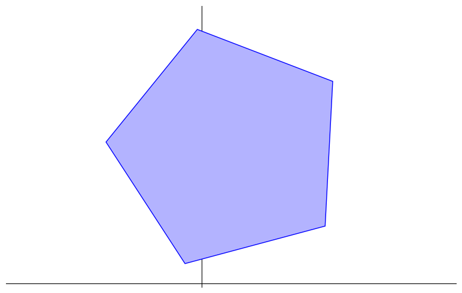 </br>
D1_c. Scale
Scale is to enlarge or shrink the geometry by a scale factor.
from compas.geometry import Polygon, Scale
from compas_plotters import Plotter
# Construct a regular polygon from a number of sides and a radius.
my_polygon = Polygon.from_sides_and_radius_xy(5, 2.0)
my_polygon.transform(T)
S = Scale.from_factors([0.5, 1, 1]) # scale factors along X, Y, Z
my_polygon.transform(S)
plotter = Plotter(show_axes=True)
plotter.add(my_polygon, edgecolor=(0, 0, 1), facecolor=(0.7, 0.7, 1.0))
plotter.zoom_extents()
plotter.show()
</br> 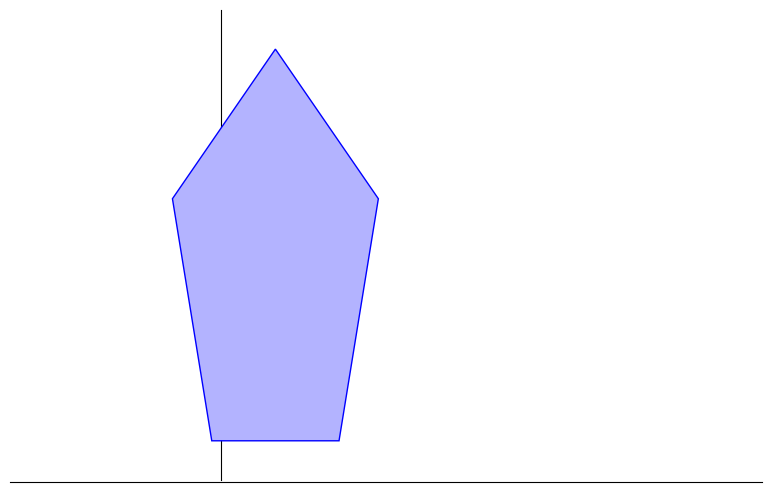 </br>
D1_d. Frame
Frame plays an important role in transformation, especially in 3D. A frame defines a local coordinate system and transformation can be created between different coordinate systems represented by frames. Note that Frame is different from a Plane. A frame is defined by an origin and two axes, while a plane is defined by an origin and a normal vector.
from compas.geometry import Frame, Transformation
f1 = Frame([1, 1, 1], [0.68, 0.68, 0.27], [-0.67, 0.73, -0.15])
T = Transformation.from_frame(f1)
print(T)
[[ 0.6808, -0.6688, -0.2988, 1.0000],
[ 0.6808, 0.7282, -0.0788, 1.0000],
[ 0.2703, -0.1498, 0.9511, 1.0000],
[ 0.0000, 0.0000, 0.0000, 1.0000]]
f2 = Frame([1, 1, 1], [0.68, 0.68, 0.27], [-0.67, 0.73, -0.15])
T = Transformation.from_frame_to_frame(f1, f2)
f1.transform(T)
print(f1 == f2)
True
D2. Intersections
To compute intersections between primitives and/or shapes, use the intersection functions.
from compas.geometry import intersection_line_plane
line = [1, 1, 0], [1, 1, 1]
plane = [0, 0, 0], [0, 0, 1]
intersection_line_plane(line, plane)
[1.0, 1.0, 0.0]
from compas.geometry import Plane, intersection_line_plane
line = [1, 1, 0], [1, 1, 1]
plane = Plane.worldXY()
intersection_line_plane(line, plane)
[1.0, 1.0, 0.0]
D3. Cross Product
# plotter.zoom_extents()
from IPython.display import display
fig = plotter.figure
display(fig)